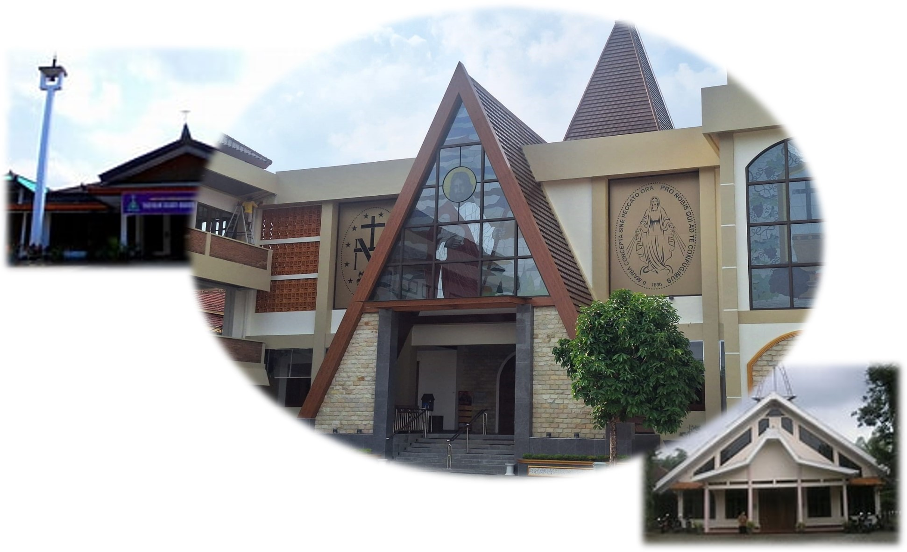

Paroki Santo Pius X
Karanganyar
Karanganyar
Paroki Santo Pius X Karanganyar adalah komunitas umat Katolik yang bertumbuh dalam iman, bersatu dalam kasih, dan melayani dengan sukacita.
Sejak berdirinya, paroki ini menjadi pusat pembinaan iman, pelayanan sakramen, serta kegiatan sosial kemasyarakatan bagi umat di wilayah Karanganyar dan sekitarnya.
Baca Sambutan Romo
Salam Sejahtera dalam Kasih Kristus,
Puji syukur kita panjatkan ke hadirat Tuhan Yang Maha Esa atas segala rahmat dan karunia-Nya yang tak terhingga bagi Paroki kita tercinta, Santo Pius X Karanganyar. Melalui website ini, kami berharap umat dapat semakin mudah mengakses informasi, jadwal misa, dan kegiatan paroki.
Gereja bukan sekadar bangunan fisik, melainkan persekutuan umat yang hidup. Oleh karena itu, tema kita tahun ini adalah "Berjalan Bersama Membangun Gereja yang Bahagia, Menginspirasi dan Mensejahterakan". Mari kita wujudkan tema ini dalam tindakan nyata sehari-hari, baik di lingkungan keluarga, lingkungan stasi, maupun di tengah masyarakat luas.
Semoga sarana digital ini sungguh membawa manfaat untuk perkembangan iman kita semua. Mari terus saling mendoakan dan bergandengan tangan dalam pelayanan.
Tuhan memberkati kita semua.

Selamat datang di Sekretariat Paroki St. PIUS X Karanganar. Silahkan chat untuk informasi lebih lanjut. 🏠👋
Open Chat